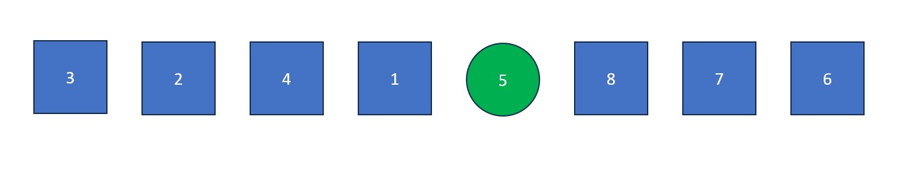

Procedure for ASCENDING Quick Sort:
- Designate an element as the "pivot
value". This value will serve as a point of comparison, where values greater than it are moved to the right
and values less than it are moved to the left. It is usually easiest to use the first, last, or median value
in the list as the pivot. For this example, we will use the last element.
- Place an "i" at index -1 (to the left of the first value in the list) and a "j" at index 0 (the first value in the list). The "j" will be used to find values less than the pivot and the "i" will be used to swap values greater than the pivot with values found by "j".
- The "j" is moved rightwards element by element until it finds a value less than the pivot value. When this happens it stops and "i" moves forward one element. The elements at "i" and "j" then swap. This process continues until "j" reaches the pivot value. If "i" and "j" are on the same element during a swap, no changes occur.
- Once "j" arrives at the pivot, move "i" to the right one spot. Next, swap the element at "i" with the element at "j" (the pivot value). The old pivot value is now at its final resting place and we are left with a list full of values less than it and a list full of values greater than it.
- Repeat steps 1-4 with each of the two new lists. This likely means multiple rounds with a different pivot each round, repeated until all elements are isolated (separate from each other). Focus on the left list first and then the right list after.
Note #1: The "i" (left) and "j" (right) are placed at opposite ends from each other if the pivot is chosen as the median value. The "i" moves right until it finds a value greater than the pivot, stopping once/if it finds one. The "j" does the same except looking for a value less than the pivot before stopping. Once both pointers are stopped, their elements are swapped. When "i" and "j" cross over each other, the round is over and the same process is repeated with the two lists - the one greater than the pivot and the one less than the pivot.
Note #2: If the pivot is the left-most value in the list, the "i" begins at the index of length (to the right of the last value in the list) and "j" begins at the right-most value in the list. They follow the same exact process as below except "j" moves left to find values GREATER than the pivot and "i" is used to swap values LESS than the pivot with values found by "j". The "i" also goes left one element when "j" stops rather than right one element like described below.

Note: Now that all elements are isolated, quick sort is finished on the left side of the initial list.

Fun Fact: Despite how complex it may appear, quick sort is one
of the fastest, most efficient sorting algorithms ever invented. It's only weakness is sometimes causing very
uneven partitions because of there being a pivot value that is too far from the median of the dataset. Variations
of the algorithm such as three-way Quick Sort (splits the dataset into 3 sections rather than 2) and dual-pivot
Quick Sort (splits the dataset into 3 sections using 2 pivot values) partially solve this issue.